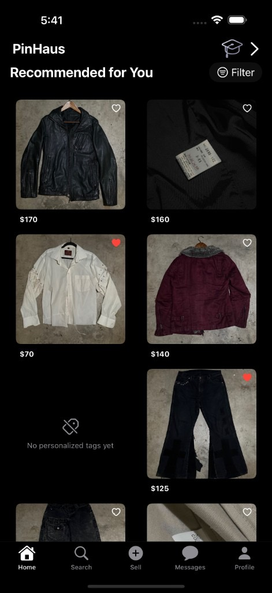

PinHaus
A product that combines style curation and purchasing, so users can move from inspiration to checkout seamlessly.

Overview
In early 2025, I was thinking about the difficulty, complexity, and ambiguity that goes into achieving a style. Then I started to think about it fundamentally and discovered something: the process has two steps—finding your style, then finding where to purchase that style.
However, there is no app to bridge this process. PinHaus is my project that assists with curation and alleviates the pain of finding the right clothing.
The current style process
Curation


All the top videos about finding your style involve Pinterest, so we can safely say they control this sector. But what about purchasing?
Purchasing


All these apps, and you still can't find what you saved on Pinterest.
Where the problem lies
The process after curation is a mystery.
You are left hoping the exact items you want are available for purchase across the many apps/websites.
This is where confusion and friction becomes most prominant, because chances are you cannot find it.
This is what causes people to skip curation and rely on purchasing websites to show them something.
But without curation there is not style.
It becomes a job of finding something you might wear rather than getting what you want to wear.
Solution
Curation Purchasing
PinHaus offers the ability to develop your style while searching for items. By combining Pinterest mechanics with commerce-only inventory, we create a new platform that offers curation and purchasing as one. This lets you go from inspiration to organization to purchasing seamlessly.
How it works

Design approach


BRAND IDENTITY
For the outward appearance, I focused on an Atelier / New York fashion aesthetic. The target audience during the growth and early stages of this product is people who want to stay ahead of the curve in both fashion and technology. They’re drawn to things that feel a bit mysterious, slightly underground, and well-curated.
APP DESIGN
For the app itself, the design is straightforward and content-focused. The goal is to keep everything clean and minimal, with simple menus and as little interruption to the browsing experience as possible.
Outcome
A fully functional iOS app that combines inspiration and purchasing.